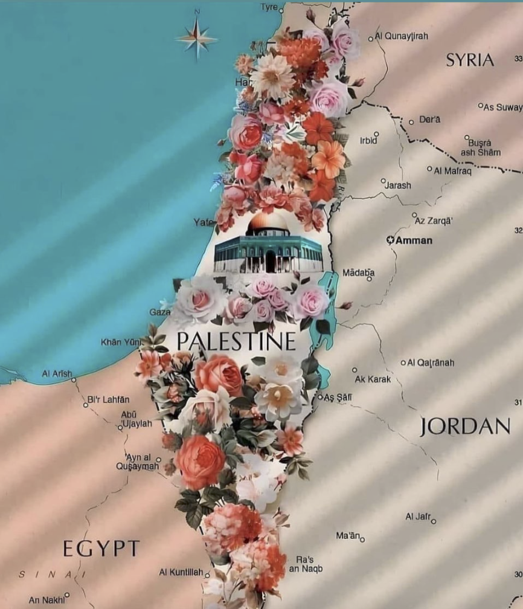

To write about the conflict is to address oneself to an audience that’s utterly inhospitable, unless you take
the jump of authoring; and being writerly, etc. No voice adequate to the emotion and eventfulness of the reality
to which attempts to write - the only ultimate form of any value is honesty, the most difficult form. So much
easier hide behind metaphor - there are many, for the body and its senenesence; it is almost a sure thing that
one will devolve into rhetoric of some kind, some loss of words covered over quickly by coined phrases, syntax -
power. The tweet, being the only kind of writing most apt for such a state of terror, becomes the way to feel -
and all tenderness is lost without the effort to make oneself honest, the effort to address oneself without
decor to something which has hidden itself, camoflauged itself within war - or rather, war.
I experienced my first global event with the onset of covid-19, suddenly aware from the view from America that
the planet is its own thing and that, against all isolationist or military conceit, it is itself not its own.
In the palm of my head are murdered kids, again.
I’m lying next to a girl who explains to me that she survived the shooting in vegas at the country music
festival.
My nephews only just starting school; a chic group of upper east side children shuttling across the sidewalks
with the same unknowing normal glib as my own childish day on 9/11.
Refusal to address myself as if I am one thing or person during this.
We’re watching a genocide. And the American view is as good as any in the world to see.
Beneath the lies, photos from Abu Ghraib gather dust as if they were taken with film. I lay a bouquet of flowers
at the feet of the arabic cultural center after I am psychoanalyzed.
The thing you have to understand about this war is that it is not a war, says my father. How it is not a war is
that it is just killing; but how it is not a war in truth is that it is an extermination; but how it is not a
war is that what Germany, the United States, France, the UK and every other party beholden are exterminating is
not the Gazan peoples, but the entire cry from across the planet to come of age against the stultifying shame
that the West bears on its own peoples. The view from America is a good as any other to see that the metal,
tested by the minute, of the world is greater than that of the kingdom. And it is a strange time to be finally
discovering my own kingliness. And it is strange but only in an eery sense that where my journey has led me
through my palm and into the body of Palestine is into the desert, fruit unspoken. What they are hiding from you
with testaments to the stench of death is that this is a truly global event - protests across the world; young
people and young bodies like my own trying out their voices to find humility in chants rather than humiliation
in the address of one voice to that which is unspeakable. The rote repetition of tenderness calling to arms the
recognition that what is stifled and hidden away in the walled in Gaza Strip is not merely Gazans and their
animalistic terrorist wing, Hamas. It is all of us. It is love. It is love not just for those to which your ego
is easily reflected back to you.
The view from America is a lie; and yet tiny limbs between folks speak the reality of life at protests.
How impossible it is to write into existence a view from which the world can be scene, from inside of America.
The only head of state in the West to express concern about extermination, being Irish.
How can we sit with peace when it is so deeply evident that the language of violence is universal; the beheading
of 40 babies not only a lie but a truth not about Palestine but about the view from America.
The strategic thought in the West right now is that if we kill all the Palestinians we kill their movement. The
left should ask itself, will our movement die with the last Palestinian?